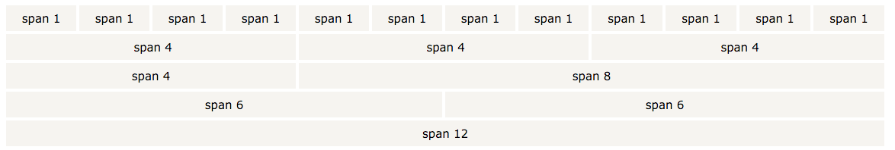

Bootstrap's grid system allows up to 12 columns across the page. If you do not want to use all 12 column individually, you can group the columns together to create wider columns
Bootstrap's grid system is responsive, and the columns will re-arrange depending on the screen size: On a big screen it might look better with the content organized in three columns, but on a small screen it would be better if the content items were stacked on top of each other.
